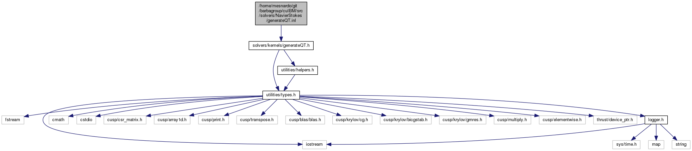
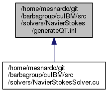

cuIBM
A GPU-based Immersed Boundary Method code
Main Page
Namespaces
Classes
Files
File List
File Members
src
solvers
NavierStokes
generateQT.inl File Reference
#include <
solvers/kernels/generateQT.h
>
Include dependency graph for generateQT.inl:

This graph shows which files directly or indirectly include this file:

Go to the source code of this file.
Generated on Wed Jul 19 2017 12:27:42 for cuIBM by
1.8.11
 1.8.11
1.8.11